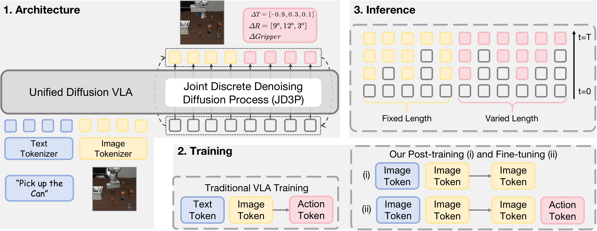
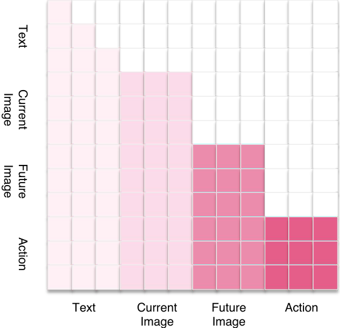
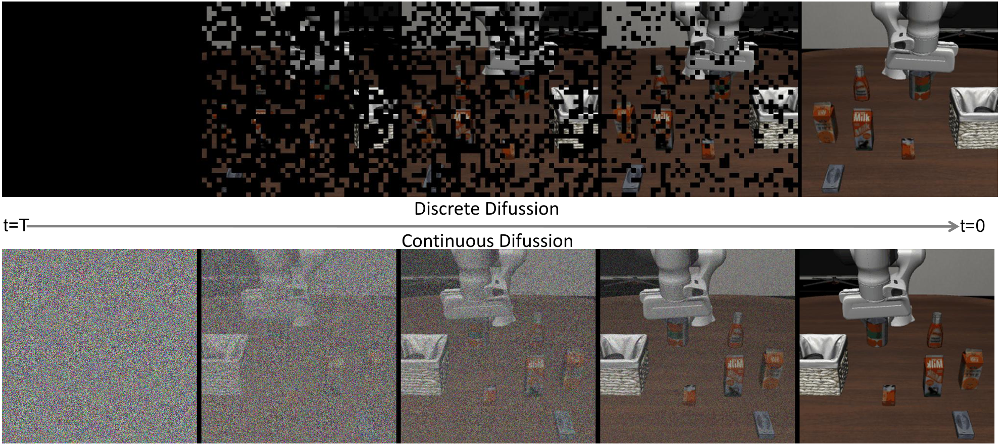
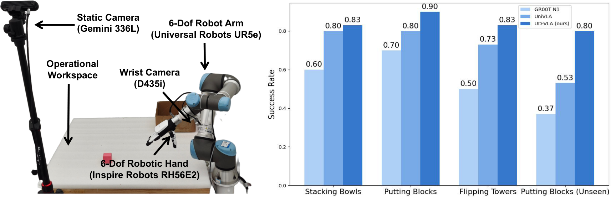
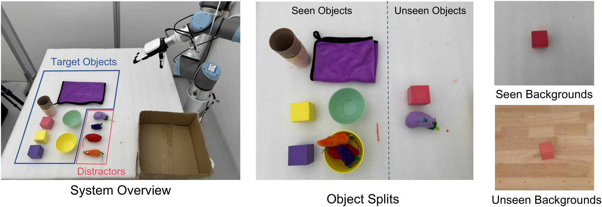
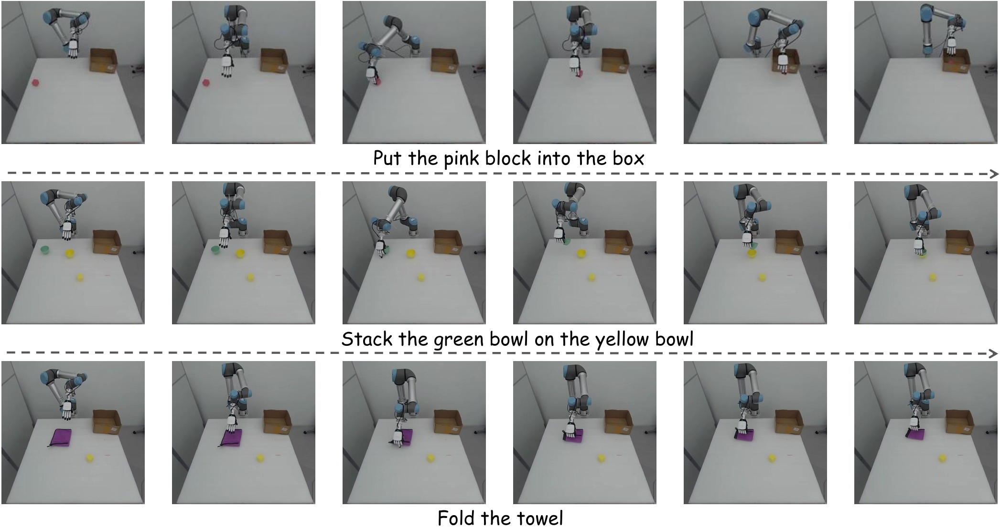
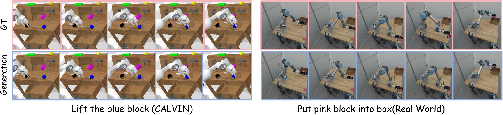
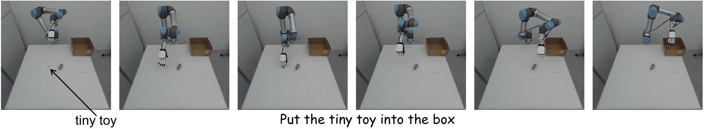

Unified Diffusion VLA: Vision-Language-Action Model via Joint Discrete Denoising Diffusion Process
1. 论文速览
| 阅读定位项 | 紧凑结论 |
|---|---|
| 论文要解决什么 | 已有 unified VLA 要么依赖外部视觉/动作专家，要么虽然把视觉和动作 token 化，却在图像生成和动作预测之间保留分离解码，导致未来图像对动作的引导不足且推理慢。 |
| 作者的方法抓手 | 用 VQ visual tokenizer 和 FAST action tokenizer 把图像、动作都转成离散 token；用 hybrid attention 保持跨模态方向性；用 JD3P 让未来图像 token 和动作 token 在同一个离散扩散过程中同步去噪。 |
| 最重要的结果 | CALVIN ABCD->D 平均长度 4.64；LIBERO 平均成功率 92.7%；SimplerEnv-WidowX 表格 overall 62.5%；JD3P 解码速度 219.3 tokens/s，相对 AR 的 50.2 tokens/s 约 4.3 倍。 |
| 阅读时要注意的点 | 核心不是“加未来图像”本身，而是让动作 token 在多轮去噪中反复 attend 到中间态未来图像 token；同时注意 SimplerEnv 正文与表格存在数值不一致。 |
难度评级：★★★★★。需要熟悉 VLA、visual chain-of-thought、VQ tokenization、FAST action tokenization、discrete diffusion / mask-predict、attention mask 设计和机器人 imitation learning benchmark。
关键词：Vision-Language-ActionDiscrete DiffusionJD3PHybrid AttentionFuture Image Generation
核心贡献清单
- Unified Diffusion VLA。论文提出把 understanding、generation、acting 统一在一个 transformer 内，而不是通过外部 image/action decoder 或分离过程拼接。
- JD3P。Joint Discrete Denoising Diffusion Process 把未来图像和动作放入同一个离散 mask-denoise 轨迹，使动作在每轮都能接收未来图像中间结果的指导。
- Hybrid attention。图像块和动作块内部用 bidirectional attention，跨块保持 causal 方向，避免 action-to-vision 信息泄露，同时保留 action 对 future image 的条件依赖。
- 训练和推理配套设计。两阶段训练先给 VLM 注入未来图像生成能力，再在机器人动作数据上联合训练；推理时使用 prefix KV cache、prefilled special tokens、confidence-guided decoding 和 decoding space mapping。

2. 动机
2.1 要解决的问题
VLA 的任务是读入自然语言指令和视觉观测，并输出能在物理世界中执行的动作。近期 unified VLA 开始把未来图像纳入 understanding-acting loop：先预测未来视觉状态，再把动作预测转化为“怎样达到这个未来状态”的 inverse kinematics 问题。
论文认为真正的统一不只是把输出模态放在同一个序列里，而是让视觉生成和动作生成彼此增益。若未来图像只在训练阶段作为辅助任务，或推理时图像生成和动作生成分开执行，动作 token 只能有限地吸收未来视觉信息。
2.2 已有方法的局限
| 范式 | 典型做法 | 论文指出的问题 |
|---|---|---|
| 外部专家统一模态 | GR-1、SEER、DreamVLA、F1、UP-VLA 等使用额外 encoder/decoder 或扩散专家生成视觉/动作。 | 模块分离可能带来 misalignment、复杂度更高，以及视觉生成和动作预测弱耦合。 |
| 统一输入输出 token 空间但分离解码 | CoT-VLA、WorldVLA、UniVLA 等在 token 层统一图像和动作。 | 图像与动作仍不是同一个 joint decoding process；一些方法推理时只解码动作，训练中的图像预测价值没有显式保留。 |
| AR 生成图像与动作 | 按 token 顺序自回归生成 future image/action。 | 每个动作 token 通常只经过一次上下文计算，图像对动作的引导不足；图像 token 本身也不天然适合严格 next-token 顺序。 |
2.3 本文高层思路
UD-VLA 的核心假设是：生成未来图像与生成动作应该在同一个同步去噪过程中共同优化。随着未来图像从粗到细被恢复，动作 token 也从 mask/噪声状态逐步恢复；每一步动作都能 attend 到当前去噪阶段的未来图像，从而获得持续、充分的视觉指导。
4. 方法详解
4.1 Unified Tokenization
UD-VLA 把语言、视觉、动作转换为离散 token 并拼成单一序列。语言 token 设计跟随 Emu3；当前和未来图像由 VQ tokenizer 离散化；动作由 FAST tokenizer 表示。作者用 <BOI>/<EOI> 标记 image block，用 <BOA>/<EOA> 标记 action block。
这个序列把输入和输出放在同一 token 空间中：前半部分是条件，后半部分是模型要生成的未来视觉和动作。
$$[\;\text{text tokens};\;\text{current image tokens};\;\text{future image tokens};\;\text{action tokens}\;]$$| text tokens | 语言指令，是理解任务意图的输入。 |
| current image tokens | 当前观测图像 token，是视觉条件。 |
| future image tokens | 模型要生成的未来视觉状态，固定长度。 |
| action tokens | 模型要生成的动作序列，可变长度，由 FAST action tokenizer 得到。 |
4.2 Hybrid Attention
Hybrid attention 的基本规则是：text/current image 作为理解输入；future image block 和 action block 是输出。块内允许 bidirectional attention，让图像 token 或动作维度之间充分交互；块间保持 causal direction，让 future image 只能看输入，action 能看输入和 future image，但不允许 action 信息回流到 vision。

直观理解：一张图像内部的 patch/token 没有严格先后因果，动作的不同空间维度也没有严格 token 顺序，因此块内 bidirectional 更合适；但“当前观测 - 未来图像 - 动作”之间存在方向性，所以跨块需要 causal。
4.3 Joint Discrete Denoising Diffusion Process
JD3P 把未来图像 tokens $\mathbf{v}_0$ 和动作 tokens $\mathbf{a}_0$ 合成一个序列。前向 noising 不是加高斯噪声，而是以概率 $\beta_t$ 把 token 替换为特殊 mask token $\mathrm{M}$；反向 denoising 则预测被 mask 位置的原始 token。
离散扩散里的“加噪”就是逐步把 token 遮住；“去噪”就是根据上下文把遮住的图像/动作 token 恢复回来。
$$\mathbf{Q}_t\mathbf{e}_{t,r}=(1-\beta_t)\mathbf{e}_{t,r}+\beta_t\mathbf{e}_{\mathrm{M}}$$| $\mathbf{e}_{t,r}$ | 位置 $r$ 的 one-hot token，可能来自 future image 或 action。 |
| $\beta_t$ | 第 $t$ 步被替换成 mask 的概率。 |
| $\mathbf{e}_{\mathrm{M}}$ | mask token 的 one-hot basis。 |
反向分解为视觉恢复和动作恢复两部分：
其中 $\mathbf{c}$ 是 text 和 current image。注意动作分布显式以 $\mathbf{v}_t$ 为条件，因此每一步动作恢复都能利用当前阶段的未来视觉 token。
4.4 Loss Function
训练时作者不显式展开完整多步 diffusion chain，而采用 single-step mask-predict objective：随机采样 mask ratio $\rho_t$，遮住 clean future image/action token 的一部分，只在被遮住的位置上计算 cross-entropy。
视觉 token 数量可能远多于动作 token，所以论文用 $\omega$ 降低视觉 loss 权重，避免视觉项支配训练。
$$\mathcal{L}_{\text{CE}}(\theta)= -\omega\sum_j^{L_v}\log p_\theta^{(v)}(v_{0,j}\mid\mathbf{v}_t,\mathbf{c})\mathbb{1}\{v_{t,j}=\mathrm{M}\} -\sum_i^{L_a}\log p_\theta^{(a)}(a_{0,i}\mid\mathbf{v}_t,\mathbf{a}_t,\mathbf{c})\mathbb{1}\{a_{t,i}=\mathrm{M}\}$$附录 Loss Formulations 还定义了表 1 中用于比较不同 VLA 的 MSE、continuous diffusion、discrete diffusion、next-token prediction 四类 loss。报告中最关键的是 $\mathcal{L}_{\mathrm{Diff\text{-}disc}}$：它是有限词表上的 masked-token prediction，而不是连续空间的 noise prediction。

4.5 两阶段训练
- Stage (i): world-model style post-training。从 pretrained VLM backbone 初始化，在大规模视频数据上训练未来图像预测，序列为
[text; current image; future image]，目标是给 VLA 注入建模未来状态的能力。 - Stage (ii): robot action fine-tuning。在下游机器人动作数据上使用完整序列
[text; current image; future image; action]，按 JD3P 联合训练图像生成与动作生成。
附录 Training Details 给出训练资源：CALVIN-ABCD action chunk 10，8 张 H100 训练约 24 小时；LIBERO 四个 suite 联合训练，action chunk 10，8 张 H100 约 30 小时；SimplerEnv 用 Bridge 数据训练，action chunk 5，8 张 H100 约 30 小时；真实世界实验收集 600+ 轨迹，action chunk 8，8 张 H100 约 8 小时。正文 real-world task 小节还写了另一个配置：4 张 H100 训练 24 小时、9000 steps、batch size 64、learning rate 8e-5、weight decay 0.1。两处 GPU/时长表述存在不完全一致，应复现时以官方代码配置进一步核对。
4.6 推理
推理从全部 mask 的 future image/action token 开始，重复少量迭代。每轮并行预测所有 mask 位置的分布，根据 confidence 选择一部分最可靠的位置填入 token，其余继续 mask。mask ratio 用 cosine schedule 从高到低变化。
5. 实验与结果
5.1 Benchmarks
| Benchmark | 设置 | 指标 |
|---|---|---|
| CALVIN | 4 个环境 A/B/C/D，34 个任务，1000 条语言指令；每个模型评估 500 个 rollout，每个 rollout 连续 5 个 sub-task。 | 平均完成长度 avg. len.，最大为 5。 |
| LIBERO | Spatial、Object、Goal、Long 四个 suite；每个 suite 10 个任务，每任务 50 次 rollout。 | 各 suite 成功率和平均成功率。 |
| SimplerEnv-WidowX | real-to-sim 环境，任务包括 Put Spoon、Put Carrot、Stack Block、Put Eggplant；变化光照、纹理、颜色、视角。 | 单任务成功率和 overall。 |
| Real-world | UR5e + Inspire RH56E2 hand + D435i wrist camera + Gemini 336L static camera；三类任务：stacking bowls、putting blocks、flipping towers。 | 每个方法每任务评估 30 次，seen/unseen 设置。 |
5.2 Main Results in Simulation
| Benchmark | UD-VLA 结果 | 关键对比 |
|---|---|---|
| CALVIN ABCD->D | 1/2/3/4/5 连任务成功率为 0.992/0.968/0.936/0.904/0.840，Avg. Len. 4.64。 | 高于 MDT 4.52、UP-VLA 4.42、MODE 4.39、UniVLA* 4.26、GR-1 4.21。 |
| LIBERO | Spatial 94.1%、Object 95.7%、Goal 91.2%、Long 89.6%、Average 92.7%。 | 表格中 Average 高于 DreamVLA 92.6%、FlowVLA 88.1%、$\pi_0$-FAST 85.5%。Long suite 为 89.6%，是表中最高。 |
| SimplerEnv-WidowX | Put Spoon 58.3%、Put Carrot 62.5%、Stack Block 54.1%、Put Eggplant 75.0%、Overall 62.5%。 | 表格中 Overall 高于 F1 59.4%、$\pi_0$-FAST 48.3%、SpatialVLA 42.7%。 |
5.3 In-Depth Analysis / Ablation
| 问题 | 设置 | 结果 | 论文解释 |
|---|---|---|---|
| Attention 机制是否关键 | Causal / Bidirectional / Hybrid | Avg. Len. 4.04 / 4.32 / 4.64 | 块内 bidirectional 适合图像空间一致性和动作维度相关性；跨模态 full bidirectional 会泄露信息，因此 hybrid 最好。 |
| 未来图像是否比当前图像重建有用 | Null / Current Image / Future Image | Avg. Len. 4.21 / 4.39 / 4.64 | 当前图像重建增强细粒度感知，但只学静态信息；未来图像提供时序动态和动作规划线索。 |
| JD3P 是否比其他解码机制好 | AR / Jacobi / Independent Diffusion / JD3P | Avg. Len. 4.18 / 4.16 / 4.35 / 4.64；速度 50.2 / 101.6 / 144.4 / 219.3 tokens/s。 | joint denoising 让动作从中间图像去噪状态中反复获益；independent diffusion 信息流有限。 |
5.4 Real-World Experiment

真实世界数据包括三类任务：stacking bowls、putting blocks into a box、flipping towers/towels。每类任务包含不同颜色和形状物体，数据在三个背景中采集；正文写每类 200 条轨迹、15 Hz，附录写总计 600+ 轨迹。评估包含 seen 和 unseen；unseen 包括新物体和新背景。


论文文字报告 UD-VLA 在所有真实任务上均优于 GR00T N1 和 UniVLA，且各任务成功率超过 80%。作者解释 seen tasks 中 action quantization 改善动作精度，joint denoising 保证动作质量；unseen tasks 中，未来图像生成改善对未见目标和背景的视觉泛化。
5.5 Future Image Generation Visualization


6. 论文内分析与讨论
6.1 作者给出的机制解释
- Future image 是视觉 CoT。CALVIN 结果中，作者把显式未来图像生成视为更有效的 chain-of-thought，因为动作预测能以未来视觉结果为条件。
- Multi-step diffusion 促进视觉-动作信息交换。相对单步 filled-token 预测，JD3P 通过多轮中间态让图像与动作持续交互。
- 图像生成需要 bidirectional attention。论文认为图像 token 之间主要是空间一致性关系，不适合 strict causal next-token；动作不同维度也没有天然因果顺序。
- 离散扩散兼顾效率和性能。AR 的速度为 50.2 tokens/s；JD3P 为 219.3 tokens/s，同时 Avg. Len. 最高。
6.2 作者自述的生成局限
论文在可视化分析中明确承认：生成未来帧缺少视觉 fidelity，尤其是机械臂和背景等细粒度细节。这被归因于没有大规模 generative pretraining，以及为了效率使用较少 token 的压缩图像。作者的结论是，尽管像素级准确很难，生成结果仍可靠地表达任务进展，足以服务 action planning。
7. 分析、局限与边界
7.1 这篇论文最有价值的地方
按论文自身证据，最有价值的部分是把 future visual reasoning 从“辅助训练目标”推进到“推理时共同优化的中间结构”。JD3P 让 action token 不是一次性读完 future image 后生成，而是在每一步离散去噪中都接收 future image token 的中间态指导。CALVIN 消融中 Future Image 相比 Null 从 4.21 到 4.64，JD3P 相比 AR 从 4.18 到 4.64，同时速度从 50.2 到 219.3 tokens/s，这是论文最直接支撑该设计的证据。
7.2 结果为什么站得住
结果由三类仿真 benchmark、真实机器人和多组消融共同支撑：CALVIN 检查长序列语言操作，LIBERO 检查 spatial/object/goal/long 泛化，SimplerEnv 检查 real-to-sim transfer；真实实验又覆盖 seen/unseen 物体和背景。消融没有只比较完整模型与弱 baseline，而是分别拆 attention、visual generation target、decoding mechanism，这让“hybrid attention + future image + JD3P”的因果链条更清楚。
7.3 局限
- 未来图像质量有限。作者明确承认预测帧细节不够，尤其是机械臂和背景。若任务需要精确几何、遮挡关系或接触状态，低 fidelity future image 可能不足。
- 真实世界规模仍小。真实实验为三类任务、600+ 轨迹，虽然包含 unseen 设置，但还不足以证明跨机器人、跨场景、跨技能的大规模通用性。
- 文本与表格存在不一致。SimplerEnv overall 在正文和表格中冲突；训练资源在正文 real-world 小节和附录 training details 中也有不同描述，复现时需要核对官方代码。
- 依赖离散 tokenization 质量。视觉和动作都被压缩为离散 token，VQ codebook 和 FAST action tokenizer 的量化误差可能限制细粒度控制。
7.4 适用边界
论文证据主要覆盖语言条件 manipulation benchmark 和受控真实桌面任务。尚未证明其适用于长时移动操作、复杂力控装配、高速动态操作、开放环境安全约束，或未见机器人形态。真实硬件使用 UR5e + dexterous hand + RGB-D/静态相机；换到其他 embodiment 时 action tokenizer、chunk、camera views 和 controller 可能需要重调。
8. 可复现性审计
| 复现要素 | 论文/项目给出的信息 | 审计状态 |
|---|---|---|
| 源码与图表 | arXiv 提供 LaTeX 源码，所有图为独立 PDF；本报告已转换为 PNG。 | 可检查 |
| 代码 | 项目页提供官方 GitHub：OpenHelix-Team/UD-VLA。 | 已找到 |
| Checkpoint | 项目页提供 CALVIN ABCD-D Hugging Face checkpoint：UD-VLA_CALVIN_ABCD_D。 | 已找到 |
| Benchmark 协议 | CALVIN、LIBERO、SimplerEnv 的任务、rollout 和指标在正文给出；基线在附录逐项介绍。 | 较完整 |
| 训练细节 | action chunk、GPU 数、训练时长、真实实验 batch/lr/weight decay 等信息给出。 | 有局部不一致，需代码核对 |
| 方法公式 | JD3P forward mask noising、reverse factorization、masked CE loss、confidence-guided decoding 公式完整。 | 较完整 |
| 真实数据 | 真实实验使用自采 600+ 轨迹；论文未说明公开下载。 | 真实实验难完全复现 |